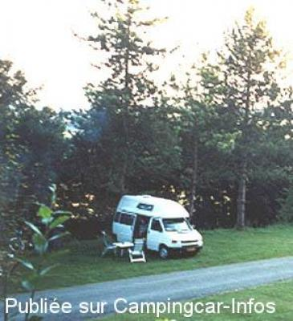

AS = Aire de services uniquement de :
AUMALE
(N° 208)
Accès/adresse :
2 le Grand Mail
76390 AUMALE
76390 AUMALE
Latitude : (Nord) 49.76633° Décimaux ou 49° 45′ 58′′
Longitude : (Est) 1.74564° Décimaux ou 1° 44′ 44′′
Tarif : 2015
Services : 2 €
Type de borne : FLOT BLEU
Services :


Autres informations :
Au pied du Camping Le Grand
Tél Office Tourisme : +33 (0) 235 934 168
Tél mairie : +33 (0) 235 934 050

Le 23/04/2003 par Joke Eijsackers
de
michou et jean paul 59
le 01/07/2012 :
sommes passes au mois de mai 2012, contrairement a ce qui est indique le stationnement est interdit sur le parking pres du vidage ( panneau interdiction) ce qui nous obliges a rentrer dand le camping . nuitee plus de 15 euros . a eviter desormais .
sommes passes au mois de mai 2012, contrairement a ce qui est indique le stationnement est interdit sur le parking pres du vidage ( panneau interdiction) ce qui nous obliges a rentrer dand le camping . nuitee plus de 15 euros . a eviter desormais .
de
cc80
le 13/04/2009 :
suis passé le 13 avril 2009, la borne fonctionnait, qq cc etaient présent pour y faire leur vidange avant de rentrer
suis passé le 13 avril 2009, la borne fonctionnait, qq cc etaient présent pour y faire leur vidange avant de rentrer
de
cc76
le 11/12/2007 :
ATTENTION : hors saison, la borne est enlevée.
Et le camping "Le Grand Mail" est fermé
ATTENTION : hors saison, la borne est enlevée.
Et le camping "Le Grand Mail" est fermé
de
STEPH
le 16/10/2005 :
27/08/05 camping parfait pour une nuit. Calme mais certains emplacements en pente. Attention, nuit trés froide.
27/08/05 camping parfait pour une nuit. Calme mais certains emplacements en pente. Attention, nuit trés froide.
de
Jacqueline Bricmant - Belgique
le 23/04/2003 :
A l'aller tant qu'au retour de Vendée, nous avions l'habitude de passer la nuit à Aumalle et à y faire nos courses et le plein de mazout - 4 à 6 fois l'an. Depuis l'an dernier, il n'est plus possible de passer la nuit (du moins en saison) hors du camping proprement dit. D'où un peu cher pour dormir quelques heures !! à quand un tarif spécial pour camping cars ? du moins quand nous n'y restons que quelques heures. Regrettons cet endroit
A l'aller tant qu'au retour de Vendée, nous avions l'habitude de passer la nuit à Aumalle et à y faire nos courses et le plein de mazout - 4 à 6 fois l'an. Depuis l'an dernier, il n'est plus possible de passer la nuit (du moins en saison) hors du camping proprement dit. D'où un peu cher pour dormir quelques heures !! à quand un tarif spécial pour camping cars ? du moins quand nous n'y restons que quelques heures. Regrettons cet endroit